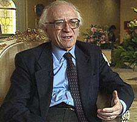

In memory of Luigi Dadda

Luigi Dadda, Emeritus Professor at Politecnico di Milano, Milano, Italy, passed away on October 26, 2012, at the age of 89. He was born in Lodi, Italy, on April 29, 1923.
He studied electrical engineering at Politecnico di Milano and graduated in 1947: his dissertation was on signal transmission by microwave radio, with experiments realized between Turin and Trieste, Italy.
He entered Politecnico di Milano as assistant professor right after graduation and became Full Professor at Politecnico di Milano in 1960, holding the chair of electrical engineering from 1962 till 1998, when he retired. He served as Rector of Politecnico di Milano from 1972 till 1984. From 1980 till 1982, he chaired the Committee for Science and Technology of the President of the Council of Ministers of Italy. In 1998 he collaborated to establish the Università della Svizzera Italiana, Switzerland, and served as President of the ALARI Institute on Embedded Systems Design at this university from 2000 till 2012.
In 1961, he was a founding member of the Associazione Italiana per il Calcolo Automatico (AICA), the Italian association for computing, for which he served as President from 1967 till 1970; he was also a co-founder and director of Rivista di Informatica, the Italian journal of computer science. He proposed the creation of the European Information Network, then implemented by the European Union.
Professor Dadda devoted his entire life and professional career to research and academic education. He can be considered the first Italian computer engineer and one of the first researchers in the area of computer architecture in Italy.
After his initial interest in telecommunications, he studied system modeling and simulation by using electric models; this research was relevant in various applications in physics and engineering, especially for studying the magnetic field and for building electro-synchrotron machines.
The main research activities of Professor Dadda initiated when he started a research on analog and digital computers. In 1953 he won a grant from the National Science Foundation, USA, to study at the California Institute of Technology in Pasadena, California, USA. At the same time, within the Marshall Plan, Politecnico di Milano obtained funding for a digital computer. Professor Dadda was requested to join the design team at the Computer Research Corporation of San Diego, CA, USA, since the vendor would not have been able to guarantee maintenance in Italy and therefore in-house expertise would have been essential. He traveled back to Italy on an old merchant ship along with the precious machine, which reached Politecnico di Milano in 1954 and became the first working digital computer in Italy and continental Europe; a significant aspect of this action was that the Centro di Calcolo hosting the computer was open to the Italian industry, as well as to the academy, thus providing a relevant tool for advances on the industrial scene. The necessity of enhancing the initial capacities of this first computer led Professor Dadda to design and implement a floating-point arithmetic unit – thus in fact opening the fields that would become his main research interest, namely computer arithmetic.
His most outstanding invention was the Dadda multiplier, a world-recognized milestone in computer arithmetic design, which enjoys regular structure, compact area, and high speed. He also proposed new architectures for convolution and other structures for digital signal processing arithmetic, including some solutions for the FERMI Project of the Large Hadron Collider at CERN, Geneva, Switzerland, and for special-purpose units operating in finite fields used in cryptography. He continued working on arithmetic units right to the end of his life: his most recent contributions concerned decimal arithmetic units.
His extraordinary achievements have been highly appreciated and recognized by the international community, both in the academia and the industry. Professor Dadda was elevated to Life Fellow of the IEEE for his contributions in the field of arithmetic architectures for computers and DSP systems.
All people who had the unique privilege of working with him or, simply, met him will always remember his innate curiosity, his passion about research and education, his optimism, his dedication, his humanity, his care for people, his attention to students and colleagues, his humor, and his infinite love for his family. We all will remember Luigi forever.
Last Updated on May 9, 2025